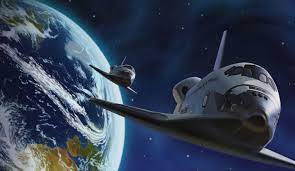

As viagens espaciais sempre encantam o mundo. Explorar o espaço sideral é fascinante, e a cada novidade ficamos animados com o que pode ser descoberto. Russos e norte-americanos protagonizaram o início dessa história,
O fim da Segunda Guerra Mundial polarizou os Estados Unidos e a União Soviética como superpotências. Dessa forma, os conflitos entre esses dois países deu início à uma corrida armamentista chamada Guerra Fria. Com a busca de superioridade em vários aspectos, as duas nações também começaram uma corrida espacial. Assim, em 4 de outubro de 1957, a URSS lançou o Sputnik I. O Sputnik I foi lançado no Cazaquistão, e foi o primeiro satélite artificial a orbitar a Terra. Um mês depois, lançou o Sputnik II, que carregava Laika, uma cadela que nunca mais retornou à Terra.
Como resultado, os Estados Unidos, poucos meses após o lançamento, começou seu programa espacial com o lançamento do Explorer. O satélite artificial foi uma resposta à histeria coletiva causada pelo lançamento do projeto russo. Essa “histeria” deu origem à criação da NASA, em 1958.
Todavia, em 1961, a URSS pulou na frente na corrida espacial e lançou a Vostok I. Esta, que orbitou a Terra durante 1 hora, com Yuri Gagarin como tripulante. Foi a primeira espaçonave a ter um humano.
Posteriormente, os EUA lançaram o astronauta Alan Shepard ao espaço em um voo apenas sub-orbital. Porém, somente 8 anos depois de lançar o primeiro homem ao espaço que as viagens espaciais atingiriam outro nível.